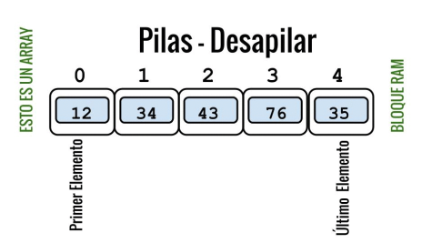

Vectores
Es un conjunto finito y ordenado de datos homogeneos.
Puede ser de una dimensión hasta n dimensiones.
Listas
Son estructuras ordenadas de elementos que requieren cierta cantidad de memoria segun se vaya usando.

Ademas al final cada lista cuenta con un valor NULL para señalar el final de la lista.
Cada elemento tiene internamente una direccion de memoria donde esta el siguiente elemento.
Listas Enlazadas Simples:
Se necesita que cada elemento tenga un enlaze con el siguiente.
Partiendo desde el primero hasta el ultimo en su debido orden.
Sin poder regresar .
Listas Enlazadas Con Cursores
Las diversas listas enlazadas se componen de Implementación de puntero, esta consiste en una secuencia de nodos, en los que se guardan campos de datos arbitrarios y una o dos referencias al nodo anterior o posterior.
Colas
Son listas en donde el modo de acceso son "FIFO" el primero en entrar es el primero en salir.

Se pueden borrar elementos en el frente o insertarlos por la cola.
Se utiliza en sistemas informaticos,transportes y operaciones
Colas Mediante Arrays
La clase ArrayCola implementa el interfaz Cola.
- Un array para almacenar los elementos de la cola (Object).
- Una capacidad inicial para el vector.
- Un marcador al primer elemento de la Cola.
- Un marcador al último elemento de la Cola (fin).
Pilas
Es considerada una lista donde el acceso es de tipo "LIFO" se suele aplicar por su simplicidad.

Es como apilar objetos y por ende los elementos de la mitad nunca serán usados sin antes despejar los que están por encima
Es considerada una lista donde el acceso es de tipo "LIFO" se suele aplicar por su simplicidad.
Pilas Mediante Arrays
La clase ArrayPila implementa la interfaz Pila.
- Un array para almacenar los elementos de la pila.
- Una capacidad inicial para el vector.
- Un marcador al tope de la pila (la posición en el vector del último elemento insertado), inicialmente
valdrá -1.
La Implementación De Cursores
- La gestión de celdas puede llegar a ser más eficiente.
- Los objetos pequeños dan alocación con new y delete este fragmenta memoria.
( usando cursores, las celdas no se mezclan con el resto de los objetos del programa).